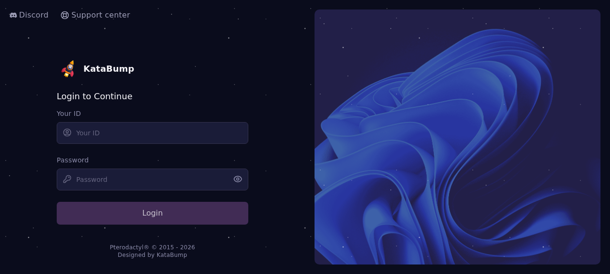
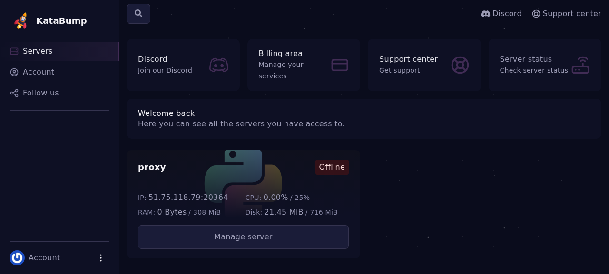
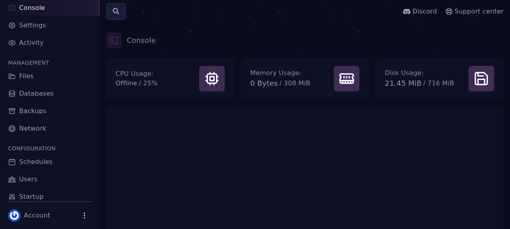
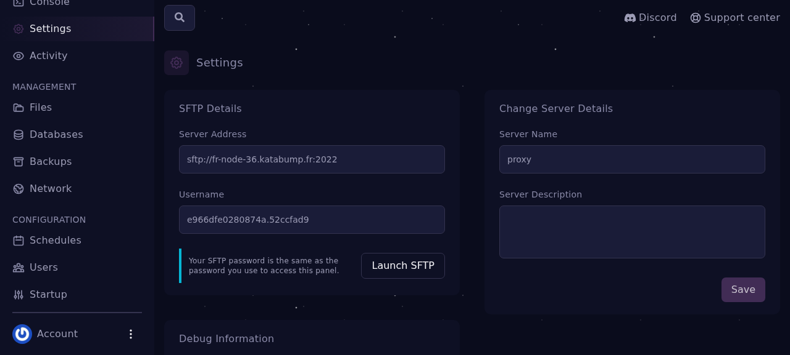
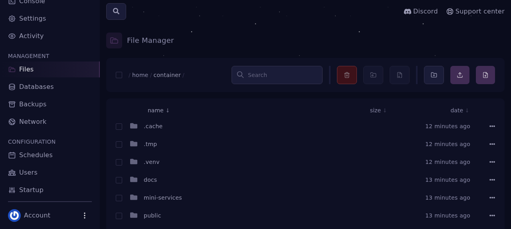
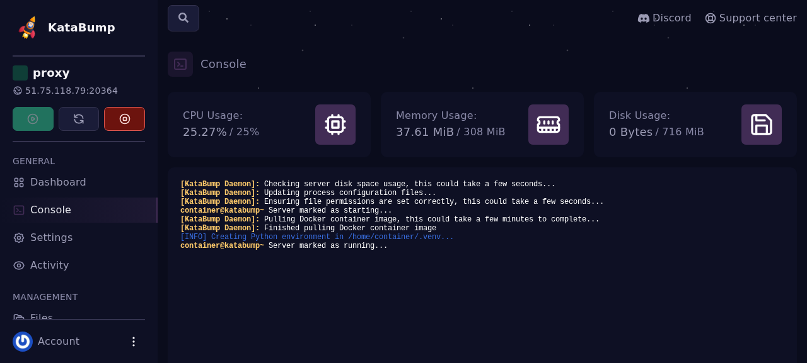
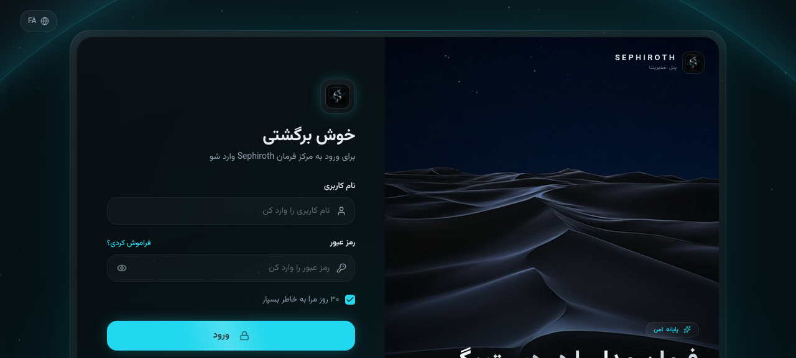
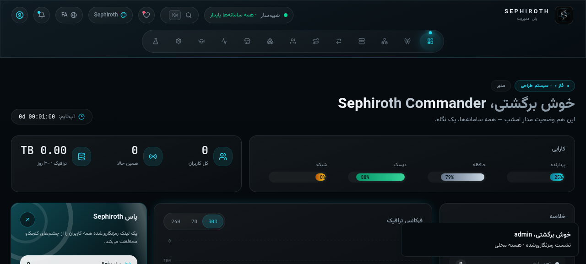

خلاصه: پنل شما الان زنده است
پنل Sephiroth نسخهی v2.3.1 بهصورت کامل روی سرور KataBump شما مستقر شد. نسخهی قدیمی (سورس خامآپلودشده که بوت نمیشد) بهطور کامل حذف شد و بهجای آن یک پکیج بهینهی production نصب شد: فرانتاند ساختهشده (Vite build)، سرور تکفایلی (esbuild)، رانتایم پرتابل Node.js و اسکریپت بوت خودکار. نتیجه: ورود کار میکند، ریلتایم زنده است و کل پکیج فقط ~۳۳ مگابایت است.
آدرس پنل، رمز ادمین (YOUR_ADMIN_PASSWORD) و کلید بازیابی (YOUR-RECOVERY-KEY). اگر رمز را فراموش کردید، با کلید بازیابی از صفحهی ورود میتوانید رمز جدید بسازید. کلیدهای پیشفرض عمومی (که در گیتهاب دیده میشوند) روی این نصب باطل شدهاند.
معماری دیپلوی: چرا Python → Node؟
KataBump از پتروداکتل استفاده میکند و ایج سرور شما فقط Python را اجرا میکند (دستور استارت ثابت است: python /home/container/app.py و تصاویر داکری فقط پایتون ۳.۸ تا ۳.۱۴ هستند). ترفند اصلی دیپلوی همینجاست: یک لانچر پایتون کوچک (app.py) نقش «سوییچ برق» را بازی میکند و Node.js پرتابل را بوت میکند:
# زنجیرهی بوت روی KataBump python /home/container/app.py ← ایج پتروداکتل فقط این را اجرا میکند ├── ۱) اگر server.cjs نبود → seph-deploy.zip را باز میکند (نصب خودکار) ├── ۲) اگر باینری Node نبود → runtime/node.tar.xz را باز میکند ├── ۳) اضافات Node (npm/headers/docs) را پاک میکند — صرفهجویی دیسک └── ۴) اجرای نهایی: NODE_ENV=production PORT=SERVER_PORT node --max-old-space-size=176 server.cjs
server.cjs یک باندل تکفایلی است که کل بکاند (Express + Socket.IO + تمام APIها + هستهی شبیهساز Xray) را داخل خودش دارد — یعنی نیازی به node_modules روی سرور نیست. فرانتاند هم از قبل ساخته شده (dist/) و همان سرور بهصورت استاتیک سرو میکند. نتیجه: بوت در چند ثانیه، بدون npm install، بدون build روی سرور.
server.cjs — باندل کامل بکاند (~2MB)
dist/ — فرانتاند ساختهشده
runtime/node.tar.xz — Node 22 پرتابل (29MB)
.env · package.json · db/
• self-extract → آپلود ۲ فایل + دکمهی استارت
• PORT خودکار از SERVER_PORT پتروداکتل
• لاگ خوانا در node.log برای عیبیابی
• بوت مجدد = بدون استخراج دوباره (سریع)
به آدرس https://control.katabump.com بروید. در صفحهی لاگین، در فیلد Your ID شناسهی حساب (YOUR_ACCOUNT_ID) و در فیلد Password رمز (YOUR_SFTP_PASSWORD) را وارد کنید و Login بزنید.

بعد از ورود، داشبورد حساب را میبینید که سرور شما (proxy) در آن فهرست شده. روی Manage server کلیک کنید تا وارد محیط مدیریت سرور (پتروداکتل) شوید.

در بالای پنل، آدرس عمومی سرور را میبینید: YOUR_SERVER_IP:20364. همین آدرس، لینک نهایی پنل Sephiroth شماست (پورت 20364 همان allocation اختصاصی است که پنل روی آن گوش میدهد). از نوار کنار، تبهای Console، Files، Settings، Startup، Network و Backups در دسترساند.

پنل Sephiroth با ~۱۷۴MB حافظه کار میکند؛ یعنی در سقف ۳۰۸ مگابایتی KataBump راحت جا میشود. دیسک مصرفی پس از نصب حدود ۱۵۰ مگابایت است (Node پرتابل + پکیج).
در مخزن پروژه، اسکریپت آماده داریم. این اسکریپت در سه گام، پکیج ۳۳ مگابایتی seph-deploy.zip را میسازد:
# ۱) نصب دپندنسها و build فرانتاند bun install && bunx vite build → dist/ (SPA + فونتها) # ۲) باندل کردن کل بکاند در یک فایل bunx esbuild server.ts --bundle --platform=node --format=cjs --external:vite → server.cjs (~2MB) # ۳) افزودن لانچر + رانتایم Node و زیپ نهایی zip -qr seph-deploy.zip . → آمادهی آپلود (33MB)
خروجی نهایی دقیقاً همین ساختار را دارد: app.py + server.cjs + dist/ + runtime/node.tar.xz + .env. اگر پکیج را از قبل دارید، این مرحله را کامل رد کنید.
چون esbuild همهچیز را داخل server.cjs باندل میکند. نتیجه: آپلود چندثانیهای، دیسک کم، و هیچ «npm install»ی روی سرور لازم نیست — فقط یک فایل جاوااسکریپت و یک باینری Node.
برای آپلود و حذف فایلها از SFTP استفاده میکنیم (سریعتر و مطمئنتر از آپلودر مرورگر). مشخصات اتصال در تب Settings پنل KataBump بخش «SFTP Details» هست:

قبل از آپلود، تمام فایلهای قدیمی داخل مسیر / (معادل /home/container) را حذف کنید — در نسخهی قبلی، سورس خام آپلود شده بود که هرگز بوت نمیشد:

# پاکسازی کامل کانتینر (از داخل FileZilla همه را Select All → Delete، # یا با اسکریپت ssh2 پروژه:) bun sftp.ts deleteall → DELETE_ALL_OK · remaining: (empty)
از تب Console دکمهی Stop را بزنید تا پروسه در حال اجرا، فایلها را دوباره ننویسد. بعد از آپلود دوباره Start میکنیم.
هر دو فایل را در ریشه (کنار هم) آپلود کنید:
bun sftp.ts upload seph-deploy.zip /seph-deploy.zip → UPLOAD_OK (33MB) bun sftp.ts upload app.py /app.py → UPLOAD_OK (3.7KB) # وضعیت نهایی ریشهی کانتینر: bun sftp.ts ls / 3793 app.py 33936548 seph-deploy.zip
همین! نیازی به آپلود تکتک فایلها نیست — app.py در اولین استارت، خودش seph-deploy.zip را باز میکند (self-extract) و سپس رانتایم Node را آماده میکند.
به تب Console برگردید و دکمهی Start (دکمهی سبز) را بزنید. پتروداکتل کانتینر را بالا میآورد، محیط پایتون را میسازد و app.py اجرا میشود. در کنسول این خطوط را میبینید:

# آنچه در اولین بوت میگذرد (چند ثانیه): [sephiroth-launcher] extracting seph-deploy.zip ... ← نصب خودکار پکیج [sephiroth-launcher] extracting node runtime ... ← آمادهسازی Node 22 [sephiroth-launcher] node v22.14.0 [sephiroth-launcher] PORT = 20364 SERVER_PORT = 20364 [sephiroth] Full-stack panel + Xray core simulator listening on http://0.0.0.0:20364
حالا سرور روی 0.0.0.0:20364 گوش میدهد — همان پورت allocation شما.
آدرس http://YOUR_SERVER_IP:20364 را در مرورگر باز کنید. صفحهی ورود Sephiroth (تم ابیسیدین + فیروزهای، فارسی RTL) بالا میآید. با admin و رمز امن جدید وارد شوید:


• صفحهی لاگین کامل رندر میشود (فونتها و لوگو از سرور خودتان)
• ورود با admin / YOUR_ADMIN_PASSWORD انجام و نشست «برقرار» میشود
• تایمر «آپتایم» بالا میشمارد = Socket.IO ریلتایم فعال است
• دیتای اولیه صفر است: ۰ کاربر، ۰ اینباند، ۰ ترافیک — نصب تمیز
امنسازی: کاری که خودکار انجام شد
چون مخزن عمومی گیتهاب، رمزها و کلیدهای پیشفرض را نمایش میدهد، روی این نصب سه اقدام امنیتی انجام شد:
| اقدام | روش | وضعیت |
|---|---|---|
| رمز ادمین جدید | متغیر محیطی SEPHIROTH_ADMIN_PASS در فایل .env سرور — در اولین seed اعمال میشود |
YOUR_ADMIN_PASSWORD · رمز قدیمی sephiroth → 401 |
| چرخش کلید بازیابی | POST /api/auth/recovery/rotate — کلید جدید یکبار نمایش داده میشود |
YOUR-RECOVERY-KEY · کلید قدیمی باطل شد |
| رفع باگ کوکی نشست | فلگ Secure کوکی فقط برای HTTPS واقعی ست میشود (v2.3.1) — وگرنه مرورگر روی HTTP کوکی را پس نمیداد |
ورود روی IP:PORT بدون TLS درست شد |
• از همین حالا ۲FA (TOTP) را در تنظیمات ← امنیت فعال کنید — با QR و بدون وابستگی خارجی.
• رمز را از داخل پنل (آیکن پروفایل ← تغییر رمز) به چیزی که فقط شما میدانید تغییر دهید؛ سپس کلید بازیابی را دوباره بچرخانید.
• آدرس IP:PORT رمزنگاری ندارد؛ اگر روزی TLS خواستید، یک دامنه + کلودفلر جلوی پورت کافی است.
بروزرسانی نسخههای آینده
دو مسیر دارید — روی KataBump مسیر اول راحتترین است:
مسیر ۱ — آپلود پکیج جدید (توصیهشده برای KataBump)
# ۱) پکیج جدید را بسازید یا دانلود کنید (seph-deploy.zip از ریلیز گیتهاب) # ۲) سرور را Stop کنید # ۳) فایل قدیمی server.cjs را حذف کنید (بوت دوباره زیپ تازه را باز میکند): bun sftp.ts rm /server.cjs # ۴) زیپ جدید را آپلود کنید (بازنویسی) bun sftp.ts upload seph-deploy.zip /seph-deploy.zip # ۵) Start — چون server.cjs نیست، app.py زیپ تازه را باز میکند
مسیر ۲ — دکمهی بروزرسانی خودِ پنل
در تنظیمات ← بروزرسانی نرمافزار میتوانید نسخهی مخزن عمومی را چک و آپدیت را اعمال کنید. این مسیر مکانیزم git را لازم دارد؛ روی KataBump چون بدون گیت دیپلوی کردهایم، پنل خودش اعلام میکند «نصب غیر-git» — پس همان مسیر ۱ را استفاده کنید. دیتای شما (db) دستنخورده میماند و در هر دو مسیر حفظ میشود.
در تنظیمات ← پشتیبانگیری سروری یک بکاپ دستی بگیرید و فایل JSON آن را دانلود کنید. اگر آپدیت خراب شد، با Restore همان فایل به حالت قبل برمیگردید. بکاپ خودکار روزانه هم فعال است (پوشهی db/backups).
عیبیابی سریع
| علامت | علت احتمالی | راهحل |
|---|---|---|
| سرور Start میشود ولی سایت بالا نمیآید | خطای بوت در لانچر یا Node | فایل node.log را از ریشه با SFTP بگیرید — تمام خروجی لانچر و Node آنجاست |
| FATAL: server bundle missing | seph-deploy.zip کنار app.py نیست یا ناقص آپلود شده |
زیپ را دوباره در ریشه آپلود کنید و استارت بزنید |
| FATAL: node runtime missing | پوشهی runtime حذف شده |
runtime/node.tar.xz را برگردانید یا کل پکیج را دوباره آپلود کنید (پوشهی runtime را هم پاک کنید تا دوباره استخراج شود) |
| ورود انجام میشود ولی صفحه رفرش و بیرون میزند | کوکی نشست ست نمیشود (نسخهی قدیمیتر از v2.3.1 روی HTTP) | به v2.3.1 بروزرسانی کنید — فلگ Secure کوکی مشروط به HTTPS شد |
| پنل کند یا کرش میکند | محدودیت ۳۰۸MB RAM | لانچر با --max-old-space-size=176 اجرا میکند؛ از ساخت کاربرهای خیلی زیاد همزمان پرهیز کنید و سرور را Restart دهید |
| رمز ادمین را فراموش کردم | — | در صفحهی ورود «از کلید بازیابی استفاده کن» → کلید YOUR-RECOVERY-KEY و رمز جدید |